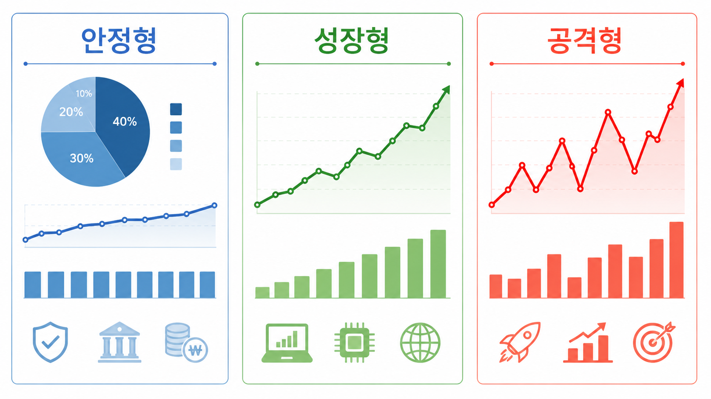

안정형
큰 변동성보다 장기 보유 안정성과 분산 투자를 중요하게 보는 유형입니다.
- SPY: S&P 500 대표 ETF로 미국 대형주에 분산 투자
- VOO: 낮은 비용으로 S&P 500을 추종
- SCHD: 우량 배당주 중심으로 배당 흐름 기대
ETF를 수익률만으로 비교하지 않고 안정형, 성장형, 공격형 세 가지 투자 성향으로 나누어 정리합니다. 자신의 성향에 맞는 ETF 조합을 생각해볼 수 있습니다.

큰 변동성보다 장기 보유 안정성과 분산 투자를 중요하게 보는 유형입니다.
미래 성장 가능성이 높은 산업과 기술주 비중을 중요하게 보는 유형입니다.
높은 변동성을 감수하고 큰 수익률을 노리는 유형입니다. 손실 관리가 매우 중요합니다.
| 성향 | 추천 ETF | 안정성 | 성장성 | 위험도 |
|---|---|---|---|---|
| 안정형 | SPY, VOO, SCHD | 높음 | 보통 | 낮음~보통 |
| 성장형 | QQQ, QLD | 보통 | 높음 | 보통~높음 |
| 공격형 | TQQQ, QLD | 낮음 | 매우 높음 | 높음 |
정리: 안정형은 장기 보유와 분산 투자에 초점을 맞추고, 성장형은 기술주와 시장 성장성을 함께 고려합니다. 공격형은 높은 수익률을 기대할 수 있지만 손실 폭도 커질 수 있으므로 전체 자산 중 일부 비중으로 조절하는 것이 좋습니다.